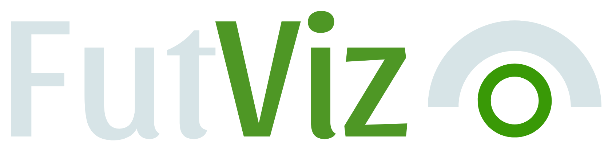

Saltar a la gráfica

Gráficas
Modelos
Busca un jugador, un equipo o una gráfica
Cerrar
Análisis exploratorio
Compara jugadores y equipos de las 5 ligas. Toca un punto para ver quién es.
Jugadores
Equipos
Gráfica
Goles vs. xG
Rematar vs. crear
Mapa de tiros
Asistencias vs. xA
Pases clave vs. xA
Construcción vs. producción
Recuperar vs. faltas
Entradas vs. intercepciones
Crea tu gráfico
Gráfica
Goles vs. xG
Ocasiones a favor y en contra
Goles recibidos vs. xG
Puntos vs. xG
Distribución por liga
Crea tu gráfico
Ataque
Goles vs. xG
Rematar vs. crear
Mapa de tiros
Creación
Asistencias vs. xA
Pases clave vs. xA
Construcción vs. producción
Defensa
Recuperar vs. faltas
Entradas vs. intercepciones
Crea tu gráfico
Goles vs. xG
Ocasiones a favor y en contra
Goles recibidos vs. xG
Puntos vs. xG
Distribución por liga
Crea tu gráfico